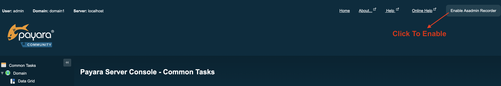

Asadmin Recorder
Since Payara Server 4.1.1.162
This feature allows you to record the actions you take in the admin console as asadmin commands, aiding with automating or reproducing your setup across multiple Payara Server Community installations.
Starting and Stopping the Asadmin Recorder
From the admin console, you should be able to see a button labelled Enable Asadmin Recorder or Disable Asadmin Recorder, depending on whether or not the asadmin recorder feature is enabled or not. Clicking this button will enable or disable the asadmin recorder feature respectively:

Once enabled, actions in the admin console that have a corresponding
asadmin command will be recorded to a file. By default, this file is
located in the domain directory, and is called asadmin-commands.txt.
Once enabled or disabled, the asadmin recorder will remain enabled/disabled until specifically enabled or disabled again through the web console or using the appropriate asadmin command. This means that the asadmin recorder will remain enabled or disabled across server restarts.
You can also enable or disable the asadmin recorder on its configuration page (detailed in the following section), or by using the following asadmin commands:
enable-asadmin-recorder-
Enables the asadmin recorder.
disable-asadmin-recorder-
Disables the asadmin recorder.
set-asadmin-recorder-configuration --enabled true-
Alternative way of enabling the asadmin recorder.
set-asadmin-recorder-configuration --enabled false-
Alternative way of disabling the asadmin recorder.
Configuring the Asadmin Recorder
To configure the asadmin recorder, navigate to the following page in the admin console: server → Asadmin Recorder:

You will be presented with the following configuration options:
- Enabled
-
Sets whether the asadmin recorder service should be enabled or disabled.
- Filter Commands
-
Sets whether or not to exclude the
asadmincommands and regular expressions listed in the Filtered Commands setting from being recorded. - Output Location
-
The absolute file path for the
asadmincommands to be written to. This defaults to a file called asadmin-commands.txt in the domain directory. - Filtered Commands
-
A comma separated list of asadmin commands and regular expressions to be excluded from being recorded if the Filter Commands option is enabled.
The default regular expressions and asadmin commands set in the Filtered Commands option are a selection of commands and regular expressions that are typically not needed for any automation purposes, yet are still sometimes called by commands and through navigation of the admin console. If you remove any of these commands from the filtered commands list, or choose not to filter any commands at all, the asadmin commands script is liable to get filled up with these commands. Due to this behavior, it is advised that you only add to this list, only removing the defaults if you really need to.
Be sure to click on the Save button to have any changes you make take effect.
In addition to using the admin console, you can configure the asadmin
recorder service using the set-asadmin-recorder-configuration command.
The command takes the following parameters:
--enabled-
Enables or Disables the Asadmin Recorder service.
--outputLocation-
Specifies the absolute file path of where the recorded asadmin commands will be written to.
--filterCommands-
Specifies whether or not the commands specified with the --filteredcommands option should be excluded from being recorded or not.
--filteredCommands-
A comma separated list of asadmin commands and regular expressions to exclude from being recorded.
As an example, the following will enable the asadmin recorder, set the
output location to /home/user/asadmin-commands.txt, and prevent the
start-instance command from being recorded (in addition to the
default configuration):
asadmin set-asadmin-recorder-configuration --enabled true --outputLocation /home/user/asadmin-commands.txt --filterCommands true --filteredCommands "version,_(.*),list(.*),get(.*),uptime,enable-asadmin-recorder,disable-asadmin-recorder,set-asadmin-recorder-configuration,asadmin-recorder-enabled,start-instance"Running the Generated Scripts
Documentation on running asadmin scripts can be found in the GlassFish Server Administration Guide, under the Run a Set of asadmin Subcommands From a File section. The guide can be found in the GlassFish Server 5 Open Source Edition Documentation referenced in the Payara Server Documentation Overview
Asadmin Commands
The following is the list of available asadmin commands with their available options to configure the asadmin recorder:
| Command | Description | Options |
|---|---|---|
get-asadmin-recorder-configuration |
Returns the current configuration of the Asadmin Recorder service. |
None |
set-asadmin-recorder-configuration |
Configures the Asadmin Recorder service. |
|
enable-asadmin-recorder |
Enables the Asadmin Recorder service with it’s current configuration settings. |
None |
disable-asadmin-recorder |
Disables the Asadmin Recorder service. |
None |
asadmin-recorder-enabled |
Returns whether or not the Asadmin Recorder service is enabled. |
None |